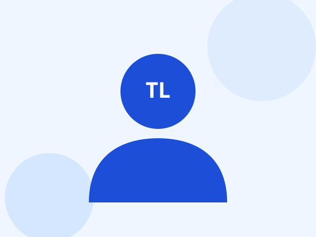
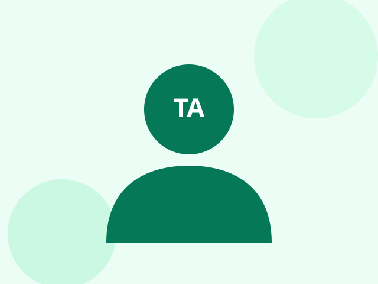
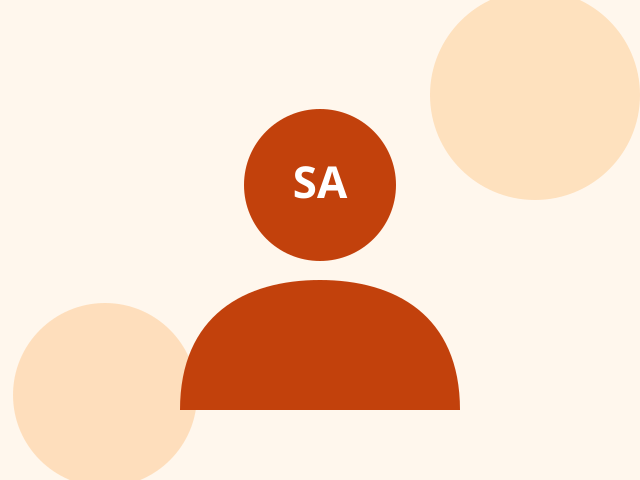
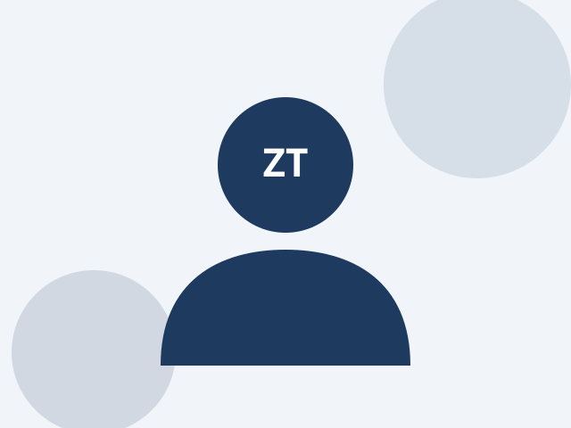
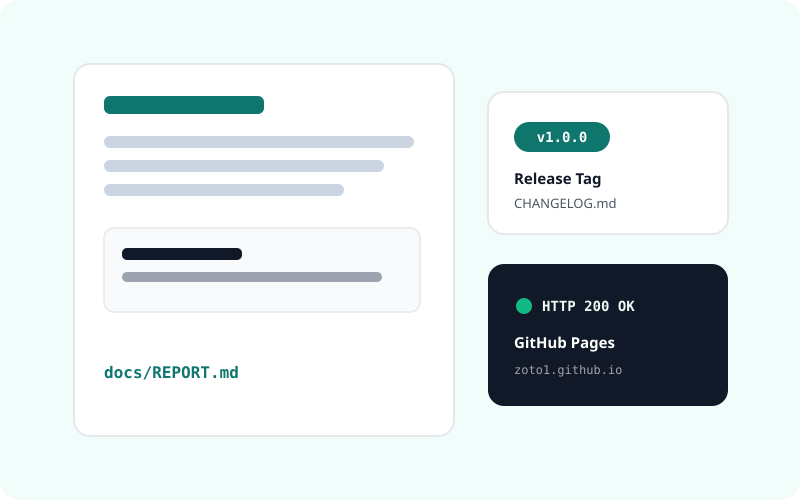

Lớp học
Môn Tư duy tính toán — Nhóm thực hành gồm 6 sinh viên phối hợp làm việc trên cùng một repository.
Sáu thành viên cùng xây dựng website giới thiệu nhóm và rèn luyện quy trình cộng tác mã nguồn chuẩn với Git & GitHub.

Thông tin ngắn gọn về lớp học, đồ án và mục tiêu chung của cả sáu thành viên.

Môn Tư duy tính toán — Nhóm thực hành gồm 6 sinh viên phối hợp làm việc trên cùng một repository.
Website tĩnh 7 trang HTML/CSS giới thiệu nhóm, quản lý toàn bộ lịch sử thay đổi và tài liệu bằng Git & GitHub.
Thành thạo tách nhánh độc lập, Pull Request, review chéo, giải quyết merge conflict, git revert và xuất bản GitHub Pages.
Hiển thị chung cả 6 thành viên, mỗi người phụ trách một trang HTML và một nhiệm vụ Git riêng.
Thiết kế giao diện trang chủ, hệ thống điều hướng 7 trang và trang cá nhân members/khanh.html.

Phụ trách trang members/thu-le.html và thực hành tạo tình huống xung đột tiêu đề trang chủ.

Phụ trách trang members/thu-anh.html và phối hợp xử lý, hoàn tất merge conflict.
Phụ trách trang members/thien.html và tạo commit điều hướng sai để nhóm thực hành kiểm tra.

Phụ trách trang members/sand.html, truy vết commit lỗi và hoàn tác an toàn bằng git revert.

Khởi tạo repo, phụ trách members/zt.html, cập nhật CHANGELOG.md, tag v1.0.0 và GitHub Pages.
Tóm tắt nhanh sở thích, kỹ năng và phần việc phụ trách của từng thành viên trước khi mở trang riêng.
@DrakyNeUwU)Phụ trách khung trang chủ index.html, stylesheet dùng chung assets/style.css và hệ thống điều hướng đồng bộ cho cả 7 trang.
Xây dựng trang giới thiệu cá nhân và trực tiếp tham gia bài tập thực hành tạo xung đột trên tiêu đề index.html.
Phát triển trang cá nhân và phối hợp xử lý xung đột hợp nhất nhánh, kiểm tra lại toàn bộ giao diện sau khi merge.
Hoàn thiện trang cá nhân và đóng vai trò tạo commit lỗi liên kết điều hướng qua PR để nhóm kiểm thử lịch sử Git.
Xây dựng trang cá nhân, tra cứu commit gây lỗi điều hướng trong git log và thực thi git revert mà không viết lại lịch sử.
@Zoto1)Khởi tạo cấu trúc repository ban đầu, hoàn thiện trang cá nhân, cập nhật docs/CHANGELOG.md, gắn tag v1.0.0 và triển khai GitHub Pages.
Sản phẩm kết hợp giữa website tĩnh HTML/CSS 7 trang và bộ bằng chứng thực hành Git & GitHub hoàn chỉnh.
Trang chủ và 6 trang thành viên sử dụng chung bảng màu, kiểu chữ Be Vietnam Pro,
lưới 3 cột trên máy tính và tự thu về 1 cột gọn gàng trên điện thoại.

Mọi thay đổi đều phát triển trên nhánh riêng, gửi Pull Request để thành viên khác review trước khi merge,
kèm bài thực hành xử lý merge conflict và hoàn tác bằng git revert.

v1.0.0 & GitHub Pages
Tổng hợp toàn bộ lịch sử đóng góp, ảnh minh chứng và link commit/PR vào
docs/REPORT.md, gắn tag phát hành v1.0.0 và xuất bản công khai qua GitHub Pages.